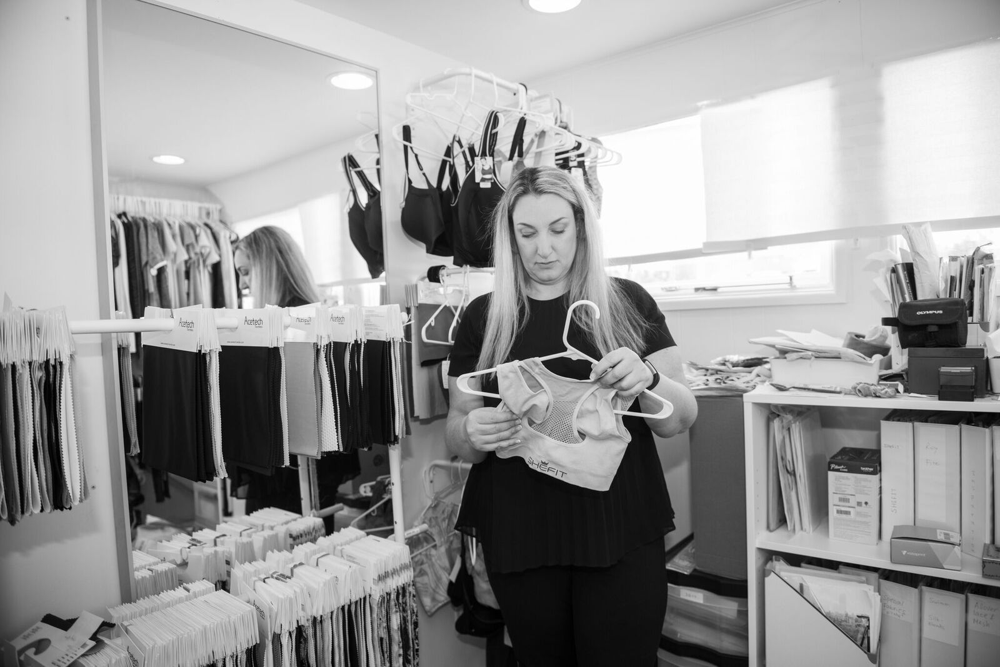
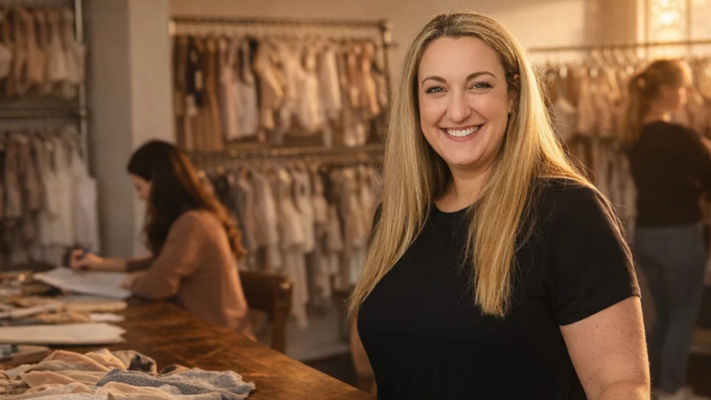

Every engagement with Miss Galit is built the same way: we get in it with you. Not as a service provider who invoices and disappears. As a partner who knows what your production timeline looks like, who cares about your margin, and who calls the factory when something needs to be escalated, because they'll pick up when we call.
The process looks different for every brand, but the through-line is always the same: we simplify what's complicated, we move fast when we need to, and we don't let problems sit.
[COPY: Galit — feel free to add a sentence here about how you typically kick off a new engagement. First call? Discovery? Audit of what they already have?]We start with a real conversation, not a questionnaire. We want to understand your brand, your vision, your constraints, and what you've already tried. From there, we tell you exactly where you are and what it will take to get where you want to go. No sugarcoating. No vague reassurances. Just a clear picture and an honest plan.
[COPY: Galit — how long does this phase typically take? What do you need from a new client before you can begin?]Once we have direction, we move into technical development, sketches, spec sheets, construction details, and the structural decisions that will define how your product looks, fits, and performs. This is where the real work starts, and where our intimates expertise pays off. We catch the problems before they become expensive samples.
[COPY: Galit — add any specifics here about bra construction, technical design, or what makes this phase different when done right vs. wrong.]We source the right fabrics and trims for your product, domestically or overseas, based on what your construction requires, what your price point allows, and what will hold up over time. We know which suppliers deliver on their promises and which ones don't. You don't have to learn that the hard way.
[COPY: Galit — any specific categories of materials you have especially deep sourcing expertise in? (e.g., seamless, lace, performance fabrics?)]This is where twenty years of relationships become your competitive advantage. We don't broker factory introductions. We match you with the right partner for your specific product, your volume, and your timeline, and then we stay in the room. When we call a factory and ask them to take an order, they take it. That's not leverage we can manufacture. It's trust we've built over decades, and we bring it to every client.
"I just need to call one factory. I say: I'm asking you to take it. And they will take it. Those type of relationships — you can't buy that."
Galit Wexler
We manage the sample process end-to-end, communicating spec revisions, overseeing fit sessions, and making sure what comes back from the factory actually reflects what you asked for. Most brands lose weeks (and thousands of dollars) in this phase. We don't let that happen.
[COPY: Galit — how many rounds of sampling is typical? Is there a story about a fit problem you caught that saved a client's launch?]When production runs, we're not just watching from a distance. We stay connected to the factory floor, monitor delivery timelines, and flag issues before they become shipment problems. When something goes sideways, and in production, something always does, we solve it. That's the job.
[COPY: Galit — do you or your team travel to factories for production oversight? Or is oversight done remotely? What does that look like for clients?]We don't disappear after the first delivery. For growing brands, we help build out the process infrastructure for repeat production, vendor management, and category expansion. The goal is to build something sustainable — a supply chain that grows with you, not one that breaks when you add a new SKU.
[COPY: Galit — what does ongoing support look like? Retainer? Project-by-project? How do most clients work with you long term?]The intimates and activewear industry moves fast. What works today is complicated by new tariffs, shifting factory capacity, and the very specific demands of your product category tomorrow. We stay current, not as observers, but as people who are inside the industry every single day.
Most clients tell us the same thing after working with us: they didn't realize how much they didn't know. And they didn't realize how much it mattered to have someone who did.
[COPY: Galit — any recent industry changes (tariffs, supply chain disruptions, new technologies) that you've helped clients navigate? A specific example here would be powerful.]
Galit is a very talented individual with a keen eye for fashion, the needs of the brand, and the needs of the consumer. She was very collaborative, insightful, a good listener, and a reasonable negotiator. She would be a valuable asset for any organization.
Dan Dolgin
Product Development, Operations & SourcingGalit is a strong leader who successfully drives change & growth. She worked with us at Spanx on some high volume bestsellers, solid, results-oriented, always looking for white spaces in the market and keen to partner on innovation.
Arnaz Bhujwalla
Product Development Manager, SpanxSet up a complimentary intro call. We'll ask you about your product, your timeline, and what you've tried so far.
Set Up a Call